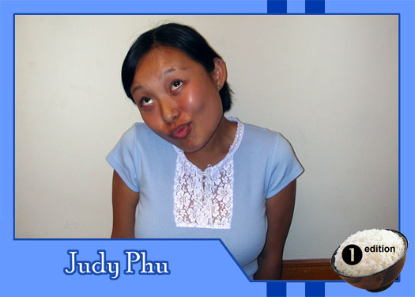

|
Why did you get involved with Theatre Rice? I heard there was free food. What do you hope to gain from TR? Apparently, there is no free food. What are your favorite films or t.v. shows? (take a deep breath...) Annie Hall, Adaptation, American Psycho, Reservoir Dogs, Amelie, Amores Perros, Taxi Driver, The Big Lebowski,Fargo, Confessions of a Dangerous Mind, Being John Malkovich, Welcome to the Dollhouse, Requiem for a Dream, The Shawshank Redemption, Magnolia, Memento,Trainspotting, Happiness, One Flew Over the Cuckoo's Nest, Ghost World, Far from Heaven, Boogie Nights, Chicago, Hedwig and the Angry Inch, The Man Who Wasn't There, Dancer in the Dark, Pulp Fiction, Rushmore, Donnie Darko, The Royal Tenenbaums, Pi, The Piano, The Talented Mr. Ripley, and I really like Seinfeld the TV show. What do you like to do in your spare time? I like to play connect four and watch movies and read plays and watch great actors...act. What message would you give to the future generations of Theatre Rice? This is not really the place for the alleviation of desperate hunger. Turn elsewhere. It is, however, fun and boisterous. A little bit creepy...but fun and boisterous. |